Core Concepts and Definitions
Contents
Core Concepts and Definitions#
We start by introducing basic properties of sets and functions necessary for establishing conditions for the (i) existence and (ii) uniqueness of a global optimum value. These definitions also introduce formal mathematical language and reasoning used in optimization textbooks and articles.
Interior Points and the Interior of a Set#
What does it mean for a point to be an interior point of a set?
This is going to be an important idea because it is going to allow us to speak about which points inisde of a set hava a little bit of breathing room around them and which do not. It is those points with a little bit of breathing room that we can interior points, and these are goin tobe fundamental to our definition of what gets to be an open set.
Our story begins with a subset \(A\) of the real numbers \(\mathbb{R}\). as well as a point \(x\) inside of that subset.
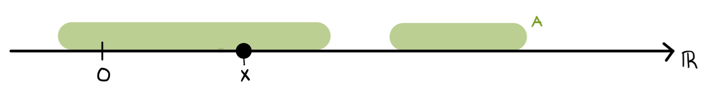
We can write this mathematically by saying:
Let \(A \subseteq \mathbb{R}\) be a real subset, and \(x \in A\).
And now we want to ask ourselves if the point \(x\) has a little bit of wiggle room around it without leaving the set. Any points that have this wigge room are called an “interior point”.
Imagine you are standing on the real number line at the point \(x\). Can you reach out your arms, even just a little bit, and not touch any elements outside of \(A\)? This question probably depends on how long your arms are! If you reach out too far, eventually you are going to touch something outside of your set, so you might need to make your arms really really short to make this happen, but as long as there is some small positive length of your arms that stays within your set, you are an interior point.
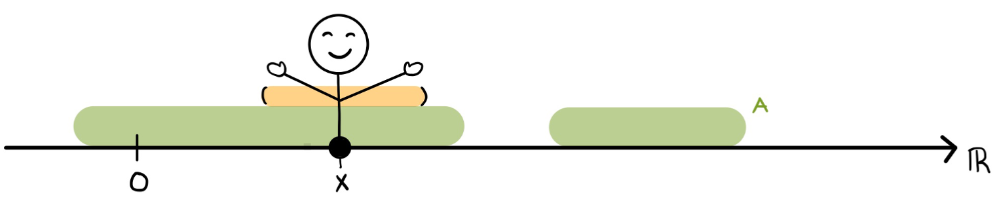
The fundamental notion that goes into this defintion is an “\(\epsilon\)-Neighborhood” or “\(\epsilon\)-Ball”- a ball of radius \(\epsilon\) around the point \(x\). In our example, \(\epsilon\) would be the length of one of your arms (by convention our arms will always be the same length, so that we are reaching equal distances on both sides), and since it is a length \(\epsilon\) can never be negative.
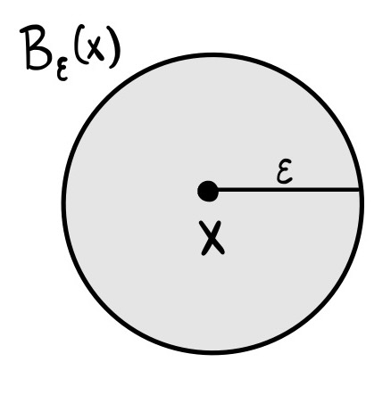
The \(\epsilon\) neighborhood is the set (that we are going to call \(B_\epsilon(x)\)) that consists of all the real numbers which are at a distance of less than \(\epsilon\) away from us at \(x\). So that would be the open interval from \(x-\epsilon\) to \(x+\epsilon\)
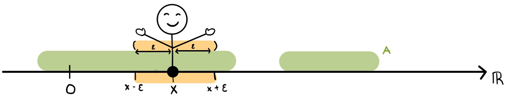
We can formally define the \(\epsilon\)-neighborhood at \(x\) as the set \(B_\epsilon(x) = (x-\epsilon, x+\epsilon)=\{t \in \mathbb{R}: |x-t| < \epsilon\}\).
We want to call \(x\) an interior point of \(A\) if its true that if my arms are short enough, I can reach out to both sides of myself and not touch anything that’s outside of \(A\).
To make this mathmatical we can say that the \(\epsilon\) neightborhood at \(x\) (everything you can touch) is a subset of \(A\), or:
\(x\) is an interior point if \(B_\epsilon(x) \subseteq A\)
This definition just says that I am an interior point if I have an \(\epsilon\)-ball, even if it is a really really small one, as long as it has a positive radius, centered at me which is entirely within the set A.
All we need is one example, we don’t need this to be true for a bunch of differnet arm lengths or radii- we just need a single positive value of \(\epsilon\) where this is true to be able to call our point an interior point.
All of the interior points of a set are called the interior of the set, i.e. the interior of \(A\) (int(\(A\)) of \(A^{\mathrm{o}}\)) is the set of all interior points of \(A\).
Now lets take an example:
What is the interior of \(A = [-2,4)\cap\{6\}\)?
Our set A is the interval from -2 to 4, includsive of -2 unioned together with the singleton point at 6.
First, lets sketch it out:
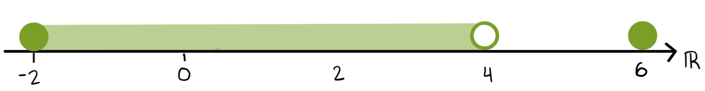
-2 is a solid circle since we are including -2, 4 will be an open circle since we are not including 4 and another solid circle at 6.
Now lets figure out what points are interiour points of \(A\) by imagning standing at various points in this set and then ask the question can I reach out my arms without leaving the set, even if my arms have to really really tiny.
Where can I stand and stretch my arms?
The first place to test, is right smack in the middle, anywhere between -2 and 4 but not at one of those end points. Is it possible for me to stand and stretch out my arms as 1, or \(-\sqrt2\) or \(\pi\)? Any of those numbers are between -2 and 4. Yes, I cans stretch out my arms even if it has to be a very small amount, even if I’m standing at 3.999 there is some small little radius I can stretch out and my \(\epsilon\)-neighborhood be entirely contained within \(A\).
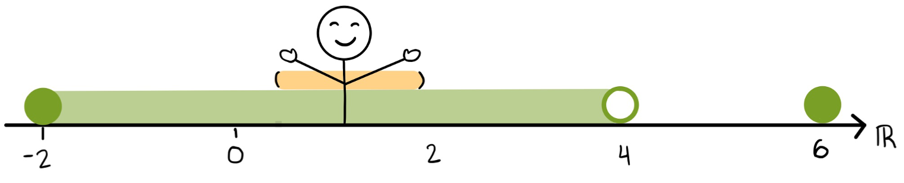
So if x is any point between -2 and 4, exxclusuve of the endpoints, then \(x\) is going to be one of the interior points of \(A\).
But that does not cover the endpoints.
Can I stand at number 4 and stretch out my arms? Well the problem here is that there is nowhere for me to stand. Because our set \(A\) does not include the point 4, 4 could never be an interior point. This is a fundamental rule of interior points, to be an interior point of \(A\), the point has to first be an element of that set. So 4 is NOT and interior point.
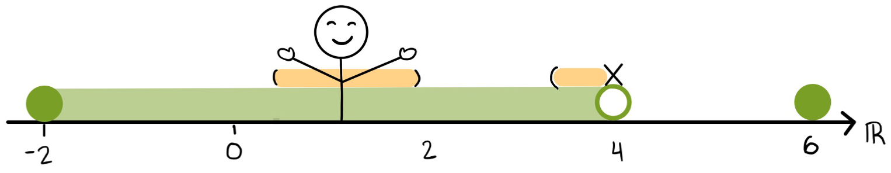
What about 6?
I can stand at 6 because it is an element of \(A\), but can I stretch out my arms without leaving the set? The answer this time in no. No matter how short my arms are as soon as I reach out to either side (i.e to 5.99 or 6.01), I am outside of \(A\). So even though 6 is an element of \(A\) is does not get to be an interior point.
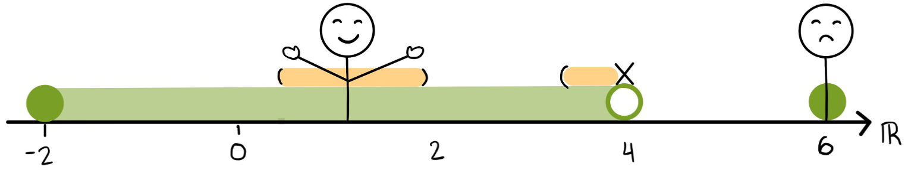
As you might imagine, the same is true about -2. When I stand at -2 and reach out my arms to both sides, ther is one direction that I can reach, but if I reach to the left (i.e. to the more negative side of the number line), there are no more elements of \(A\) for me to touch, no matter how short my arm is. So -2 also does not get to be an interior point of \(A\). This is an example of a key part of the definition of an interior point, the \(\epsilon\)-neighborhood must go on both sides of the point and be centered at the point.
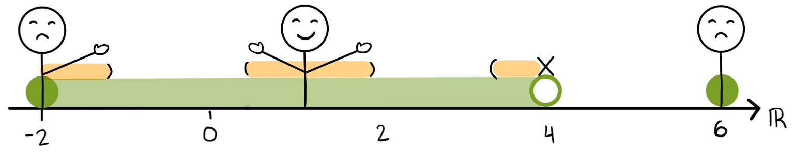
So taking stock, the interior of \(A\) is going to consist of only the real numbers between -2 and 4 but its not going to include -2 because of the arm that reaches outside of \(A\) and it’s not going to icnlude 4 because 4 wasn’t in the set in the first place and it’s not going to include 6 because no matter how short my arms are at 6 I can’t reach out without touching something that’s outside of the set. So the interior should consist just of the open interval -2 to 4, or:
\(\textrm{int}(A) = (-2, 4)\)
Definition: Interior Point
Let \(A \subseteq \mathbb{R}\) be a real subset and \(x \in A\)
\(x\) is an interior point of \(A\) if there exists \(\epsilon > 0\) such that
\(B_\epsilon(x) \subseteq A\)
Open Sets#
There’s an old saying, that no matter how far you run towards the horizon between the earth and the sky you are never going to reach it. The real number line is kind of like that too, no matter how far on the real number line that we run out towards the left or the right we’re never going to fall off the end of number line because there are always more real numbers.
This makes the real number line a really nice set to work with- if we have a function on the real number line we can never fall off the function’s graph.
Our goal in this section is to find other sets that also have that property, they don’t really have an edge.
Now that we know what an interior point is, we can say that an open set is a set whose points are all interior points.
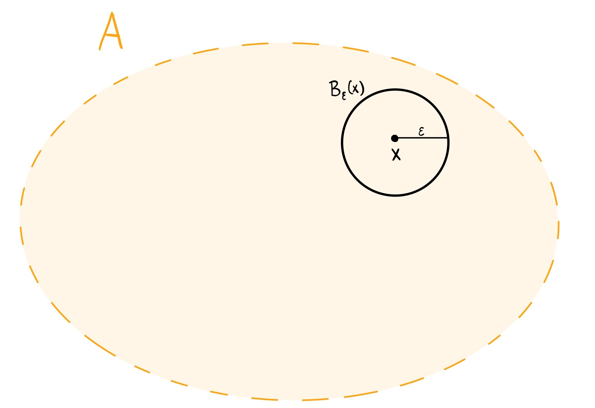
More mathematically, a subset \(A \subseteq \mathbb{R}\) is an open set is every point \(x \in A\) is an interior point of \(A\).
We can spell this out explicitly with the definition of an interior point:
A is an open set if for ALL \(x \in A\) there exists \(\epsilon > 0\) such that \(B_\epsilon(x) \subseteq A\).
We’ve previouslty defined the interior of a set- the set of all of its interior points. Because an open set has interior points for all of its points, for an open set \(\textrm{int}(A) = A\).
The most obvious example of an open set may be a finite open interval, an open interval from point \(a\) to point \(b\), exclusive of those points.
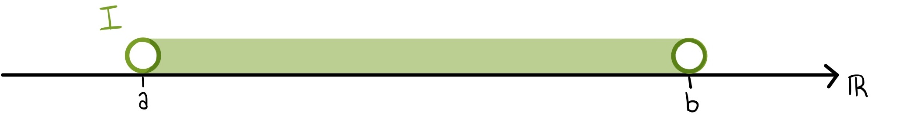
You can stand on any point \(x\) within \(I\) and you will always be able to reach out your arms, even if it is just a small amount. Even as you approach very close to either endpoint \(a\) or \(b\), because they are not included you will always be able to get that wiggle room.

Definition: Open Set
A subset \(A \subseteq \mathbb{R}\) is an open set is every point \(x \in A\) is an interior point of A
int\((A) = A\)
Isolated Points and Discrete Sets#
While interior points have wiggle room, there are other points that do not. What if no one in my neighborhood is part of my set except for myself?
We call these points isolated points. If you stand on an isolated point, you cannot reach your arms, everything you touch is not a part of your set.
Sets that are made up entirely of isolated points are called discrete sets.
Suppose that I have a subset of the real line, \(A\), that looks like this:
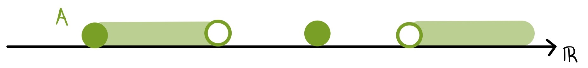
I want to know what it would look like to be a point that stand alone from the set in my \(\epsilon\)-neighborhood.
First off, I know what I wouldn’t look like. I wouldn’t look like one of the interior points, where all of my neighbors are part of \(A\).
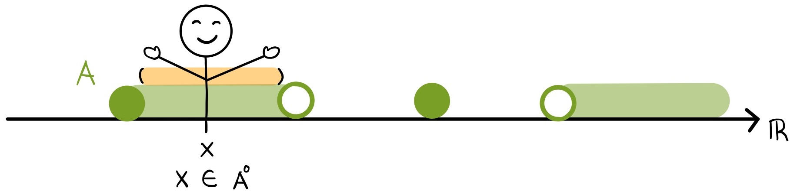
We want to look at the opposite of that, when none of my neighbors (within an \(\epsilon\) arm’s reach) are a part of \(A\). The singleton part of our set is a candaidate for such a point.
If you imagine standing on thie point and reaching out your arms, nothing you touch would be a member of \(A\).
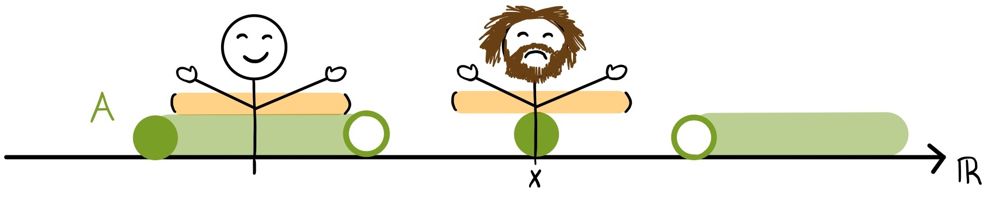
This point is like a hermit, living up on a mountain top with no neighbors or friends from its set.
Of course, if you had very long arms you could reach a neighbor, so to be an isolated point, there just has to be one positive value for \(\epsilon\) where this is true to be considered an isolated point.
Lets come up with a more mathematical definition for what makes a point an isolated point.
Let \(A \subseteq \mathbb{R}\), and \(x \in A\). \(x\) is an isolated point of \(A\) if there exists \(\epsilon > 0\):
\(B_\epsilon(x) \cap A = \{x\}\)
In plain english this means, that my armspan and A have only me in common for at least one positive lengths of my arms.
Another term for an isolate point, is to say they are bounded away from the rest of the set \(A\) by at least \(\epsilon\).
A set is called a discrete set if all of its points are isolated.
The model example for a discrete set is the set of integers as a subset of the real number line (\(\mathbb{Z}\)).
If we diagram out the set of integers on the number line, it looks like a a bunch of these isolated points, disconnected from one another.
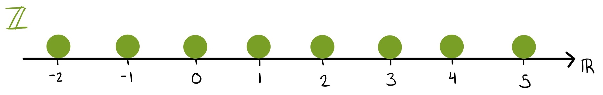
All of these integers are bounded away from the rest of the set by a minimum distance of 1, so theres no other integer within a shorter arms reach than that.
If we pick any arbitrary integer and stand on that point, as long as my \(\epsilon\) arms are shorter than 1, we satisify the defintion of an isolated points.
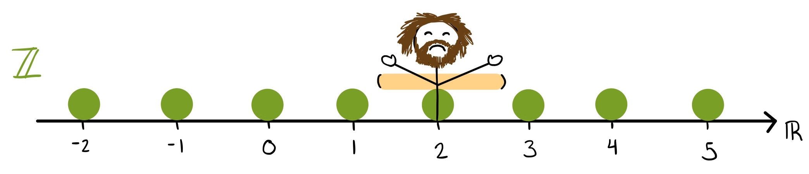
Definition: Isolated Point
Let \(A \subseteq \mathbb{R}\) be a real subset and \(x \in A\)
\(x\) is an isolated point of \(A\) if there exists \(\epsilon > 0\) such that
\(B_\epsilon(x) \cap A = \{x\}\)
Boundary Points of a Set#
We’ve defined what an open set is, and now we want to define its opposite- a closed set. A simplistic definition that may come to mind is that a closed set is a set that includes its endpoints.
The problem with that definition is that we do not know how to define the endpoints.
Lets take a look at the following set, \(A\):
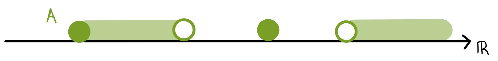
Intuitively, we may want to say that the points “on the edge” of \(A\) should be the boundary points.
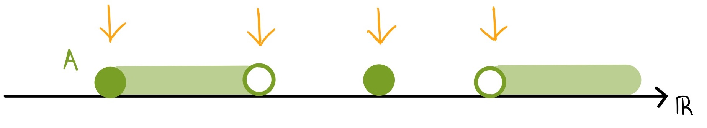
If we imagine standing on point \(x\), and sticking our arms out, we will be able to reach elements that are in \(A\) on one side, and elements that are not in \(A\) on the other.
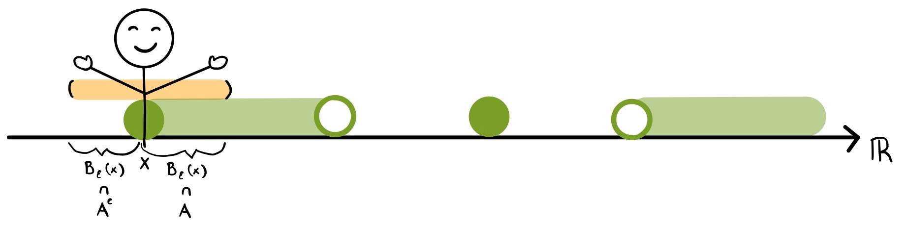
Or more mathematically,
\(B_\epsilon(x) \cap A \neq 0 \textrm{ and } B_\epsilon(x) \cap A^C \neq 0\)
Now, if we imagine standing on point \(y\), we satisfy this definition, and are therefore a boundary point, even though \(y\) is not an element of \(A\). This is an immportant distinction from interior points, points not in \(A\) can still be boundary points of \(A\).
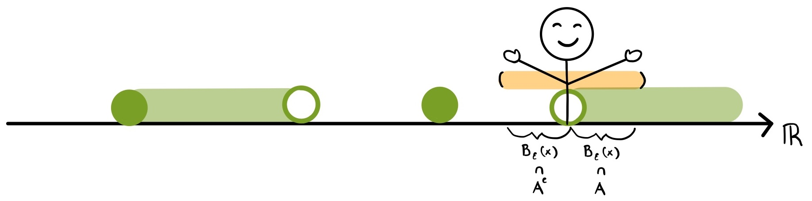
So we can proceed out mathematical definition of a boundary point by defining \(A\) as a subset of the real numbers, and our boundary point \(x\) as a member of the real numbers, rather than as a member of \(A\):
Let \(A \subseteq \mathbb{R}\) and \(x \in \mathbb{R}\):
Now if we stand on the isolated point, point \(z\), you may think that it is not a boundary point, because your arms are only touching elements outside of \(A\), and nothing within it.
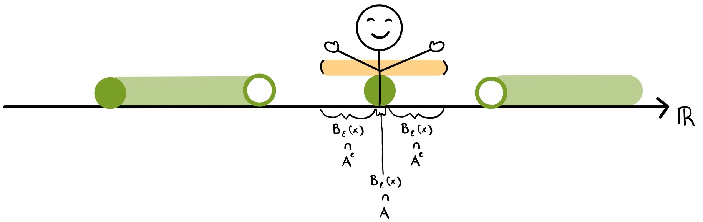
But remember our defintion of the \(\epsilon\)-neighborhood (\(B_\epsilon(x)\)) implicitly includes the point itself. So our defintion \(B_\epsilon(x) \cap A \neq 0\) and \(B_\epsilon(x) \cap A^C \neq 0\) is still true for point \(z\) and it is therefore a boundary point.
Now imagine, standing at this point \(p\) and reaching your arms out extra far, so that you are able to reach outside of \(A\). Does this make it a boundary point?
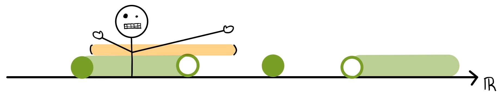
No! So to modify our definition we will say that for all \(\epsilon\) values we must satisify our definition of a boundary point.
Bringing together all of our definitions we can say that:
Definition: Boundary Point
Let \(A \subseteq \mathbb{R}\) be a real subset and \(x \in \mathbb{R}\) be a real number.
We call \(x\) a boundary point of \(A\) if for all \(\epsilon > 0\) we have both
\(B_\epsilon(x) \cap A \neq 0 \textrm{ and } B_\epsilon(x) \cap A^C \neq 0\)
Accumulation Points#
Most simply, accumulation points are points that have a lot of the set on one side and no set on the other side.
Let’s take a look at our set \(A\) where we defined 4 boundary points:
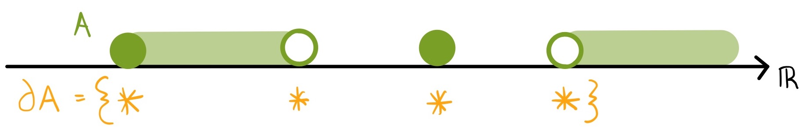
Some boundary points are qualitatively different from others, there are some that really are “on the edge” of \(A\).
We know that isolated points will always be boundary poitns, because by definition they will always reach a point of \(A\) themselves, and points outside of \(A\).
But you can also be a boundary point without being in \(A\) yourself. In order to be a boundary point in this case, you have to be able to touch a point of \(A\) no matter how short your arms are.
For a boundary point, this point within \(A\) can be yourself, like in isolated points.
But the point within \(A\) could also be a point other than yourself, as is the case with a boundary point that is not a member of \(A\) itself.
The term accumulation point differentiates between these two types of boundary points.
Specifically an accumulation point touches an element of \(A\) that is not itself no matter how short its arms get. We denote this point other than ourself (\(x\)) as the point \(y\).
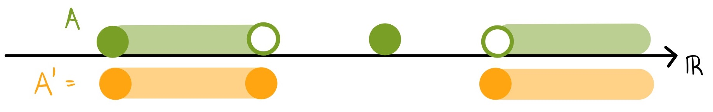
Definition: Accumulation Point
Let \(A \subseteq \mathbb{R}\) be a real subset and \(x \in \mathbb{R}\) be a real nuber.
We call \(x\) a accumulation point of \(A\) if for all \(\epsilon > 0\) there exists \(y \in A\) such that
\(y \neq x\) and \(y \in B_\epsilon(x) \cap A\)
For our set \(A\), the accumumation points include the non isolated boundary points and all of the interior points.
Interior points are by definition accumulation points because everything they touch is an element of \(A\).
We call the set of all the interior points of \(A\) the derived set or \(A'\), it is important to note that not all memebers of \(A'\) will be members of \(A\).
Closure of a Set#
We can then create a superset that includes A and all of its accumulation points, and we call this the closure of \(A\) or \(\bar{A}\).
We can now create a continuum of the set \(A\) in relation to its boundary points.
If we have a set \(A\), ee can first define the interior points (\(A^{\mathrm{o}}\)), which includes none of its boundary points, \(A \setminus \delta A\).
And we can then define the closure of A, which includes all of the boundary points, specifically the union of \(A\) and its accumulation points, \(A \cup A'\)
So that: \(A^{\mathrm{o}} \subseteq A \subseteq \bar{A}\)
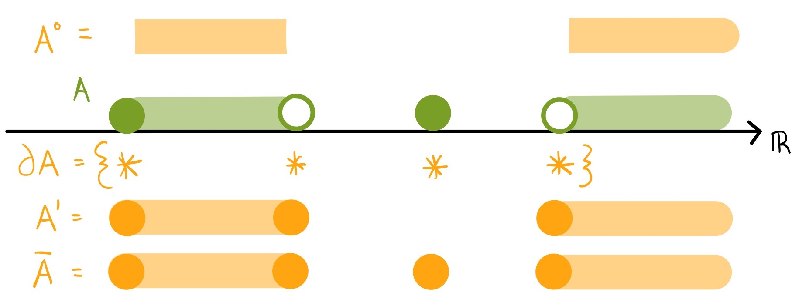
Closed Sets#
The intuituion behind a closed set is that anything that can touch the set is in the set.
The simplest example of a closed set is the closed set from point \(a\) to \(b\), or \(A = {a, b}\).
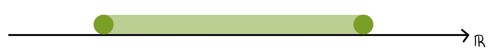
To be a closed set, \(A\) must include all of its boundary points, including its accumulation points.
We know that all of the interior points of the set are accumulation points since there those points will always be able to reach another element of \(A\).
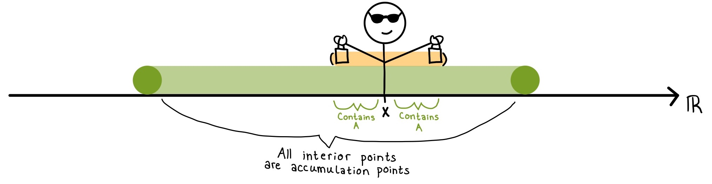
The final points, \(a\) and \(b\) are also accumulation points because they can also reach a point of \(A\) other than themselves.
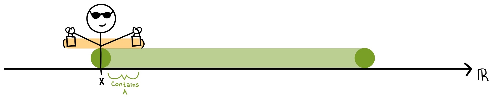
We could also draw a discrete set that looks like this:
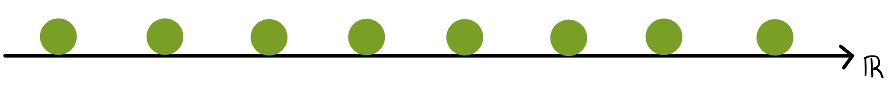
This set is a closed set because every point is a boundary point, since its \(\epsilon\)-neighborhood includes a point of \(A\) (itself) and points outstide of \(A\).
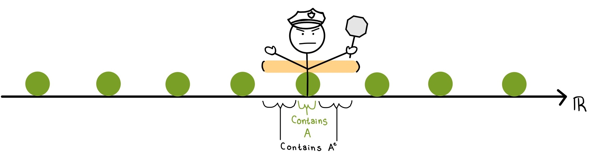
But does this mean that all discrete sets are closed sets?
To answer that question, lets look at the set \(A = \{2^{-n}: n \geq 0\}\).
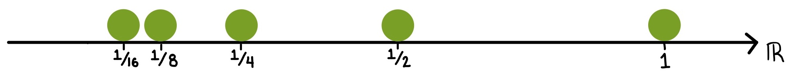
Each of these points is a bounary point, since even though the points are getting closer, there will always be an \(\epsilon\)-neighborhood that reaches outside of \(A\).
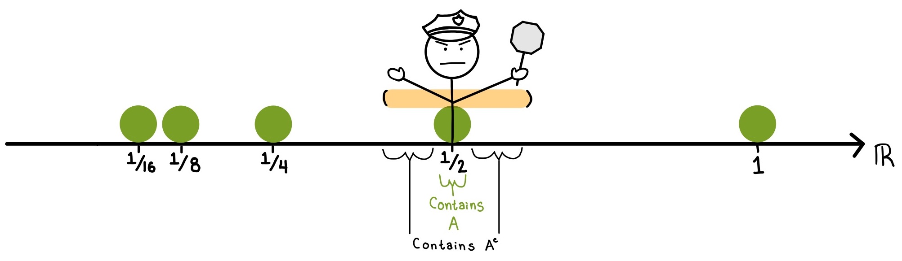
But there is one boundary point that is not included in the set at the point 0. Even though 0 is not in the set it is an accumulation point because it can always reach a point of \(A\), no matter how small the \(\epsilon\)-neighborhood is.
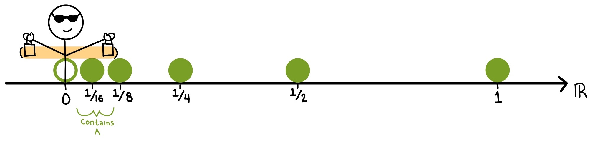